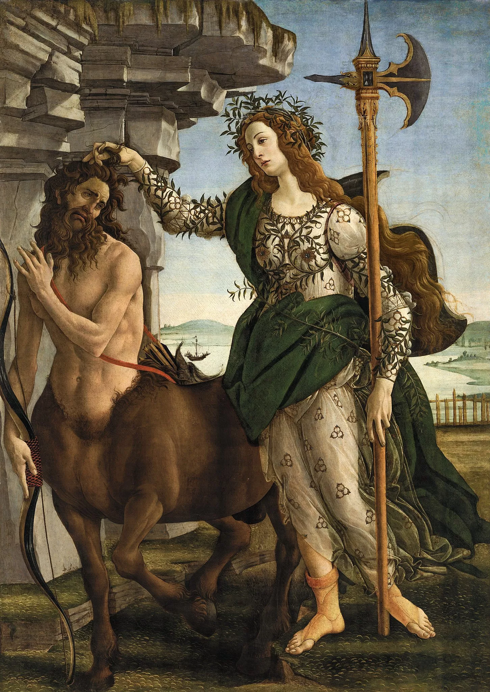
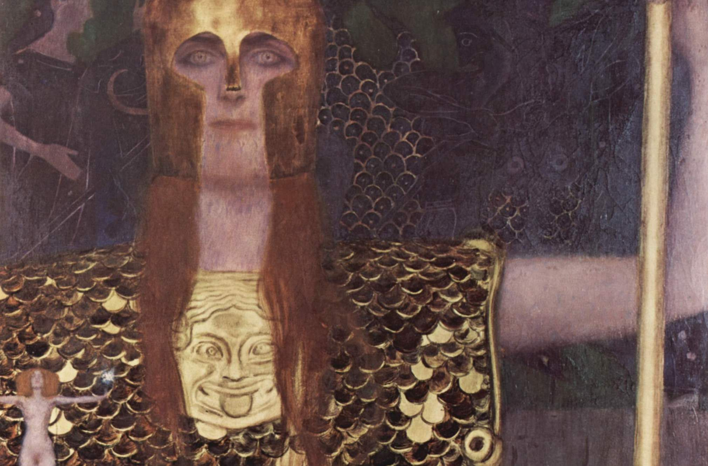

Atenea no nació de una madre. Nació de la cabeza de Zeus, después de que éste se tragara a Metis —la Titánide de la sabiduría— para evitar que su hijo lo destronara.1 La diosa de la razón nace de un acto de violencia epistémica: el dios patriarca se apropia de la sabiduría femenina y la convierte en hija propia. En las Euménides de Esquilo, Atenea vota para absolver a Orestes argumentando que el padre es el verdadero progenitor. La alianza es explícita.
Su lechuza es el animal de la visión nocturna: ve lo que otros no pueden ver cuando la luz falta. El glaukos —término griego que designa tanto el color gris azulado de sus ojos como el plumaje de su lechuza— es el color de la visibilidad en la penumbra. La sabiduría de Atenea no es la iluminación de Apolo sino la percepción en condiciones difíciles.
Botticelli la pintó en Palas y el Centauro (1482–83) sujetando por el cabello a un centauro que la mira con asombro y sumisión. La figura femenina domina al híbrido —mitad razón, mitad instinto— sin violencia aparente: con la mano sencillamente apoyada en el cabello. Pathosformel de la inteligencia que no necesita fuerza para ejercer su autoridad.
El motivo de Atenea es la racionalidad estratégica que opera desde dentro del sistema: no lo desafía, lo usa. La pregunta que el motivo deja abierta es a qué precio. Atenea es literalmente la sabiduría de Zeus exteriorizada como hija: el patriarca se apropió del conocimiento femenino (Metis) y lo devolvió al mundo en una forma que le es leal. La lealtad es el costo.
Pathosformeln visualesFidias, Atenea Pártenos (reconstrucción a partir de copias) (447–438 a.C., original perdido)
Partenón, Atenas (copias en Museo Arqueológico Nacional, Atenas)
Atenea de pie con la Nike alada en la mano, la égida con la Gorgona en el pecho. Pathosformel de la soberanía armada: el cuerpo que porta la victoria sin necesidad de usarla.
Botticelli, Sandro, Palas y el Centauro (1482–1483)
Galleria degli Uffizi, FlorenciaAtenea sujetando por el cabello a un centauro que la mira con asombro y sumisión. Pathosformel de la razón que domina al instinto sin violencia aparente: la mano que controla sin apretar.
Klimt, Gustav, Palas Atenea (1898)
Wien Museum, Viena
Atenea con coraza dorada, la figura de Nike desnuda en la mano extendida, la mirada directa al espectador. Pathosformel de la soberanía femenina en el umbral de la modernidad: la diosa que mira de frente, sin pedir permiso.